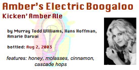

Amber's Electric Boogaloo
Kicken' Amber Ale

This was my first beer recipe. About thirty years ago I was so inspired by The Joy of Brewing (a fabulous book that demystifies the art of beer brewing) that I wrote down my own recipe from scratch and set to cooking it up. I made the beer, bottled it, and anxiously tried my first bottle after three weeks of aging. It was awful. Traumatized, I left the remaining 24 bottles to sit in the garage for the rest of the Summer, afraid to confront my "failure". About three months later I had an invitation to a barbecue to which I was supposed to bring something. I was running late so I grabbed one of the bottles of beer, and hoped it wouldn't be too nasty. When we opened it up I discovered the best ale I'd ever tasted! Apparently this brew was so rich that it required a good deal longer than the traditional three weeks to mature!
Ingredients
- 6 lbs Amber malt extract (2 cans)
- 1 cup honey
- 1/4 cup molasses
- 3 oz cascade hops (adjust to taste)
- 2 tsp cinnamon
- 1 package champagne yeast
- 3/4 cup priming sugar (for bottling)
Instructions
- Boil in 2 gallons water the malt, honey, molasses, hops and cinnamon. (Follow standard beer-making practices.)
- Rack into 5 gallon carboy, add water to 5-gallon level.
- Cool and pitch the yeast.
- Ale will take a bit longer than usual to finish fermenting (10-14 days).
- Boil, cool and add priming sugar, bottle and cap. Wait at least two months before opening.
The honey adds the subtle effervescence. The molasses adds a very subtle buttery finish. The cinnamon should really just be undetectable. (If not, decrease next time.) Remember there's a lot of sugar in here that turns to alcohol. That's why I use champagne yeast—it's higher alcohol resistance. (A bottle can really pack a punch!)
AI Editorial Notes:
- All ingredients successfully mapped directly to the instructions. No missing info flagged!
- Updated the image path to point to the local
images/sub-directory. - Removed deprecated microformat footer in favor of modern JSON-LD hidden in the head element.